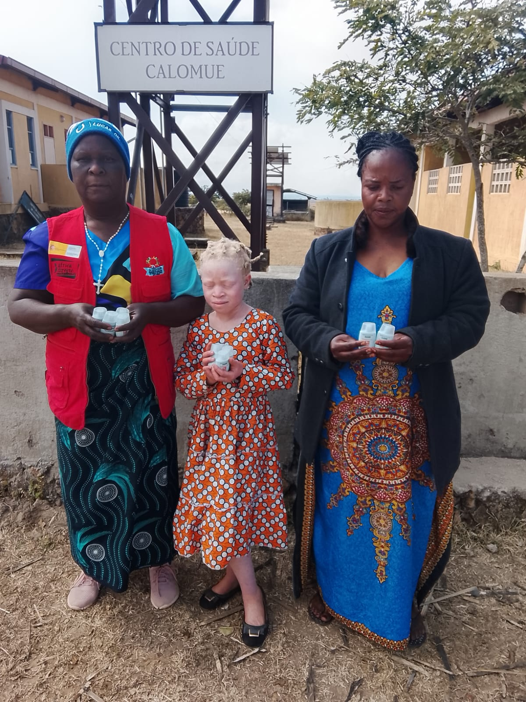
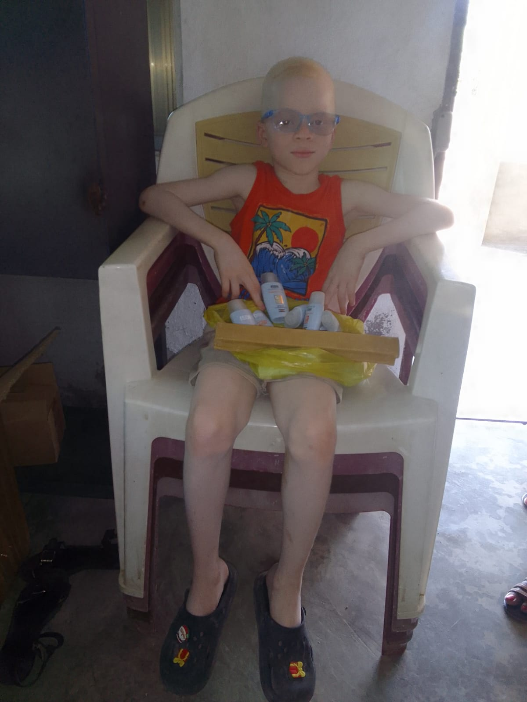
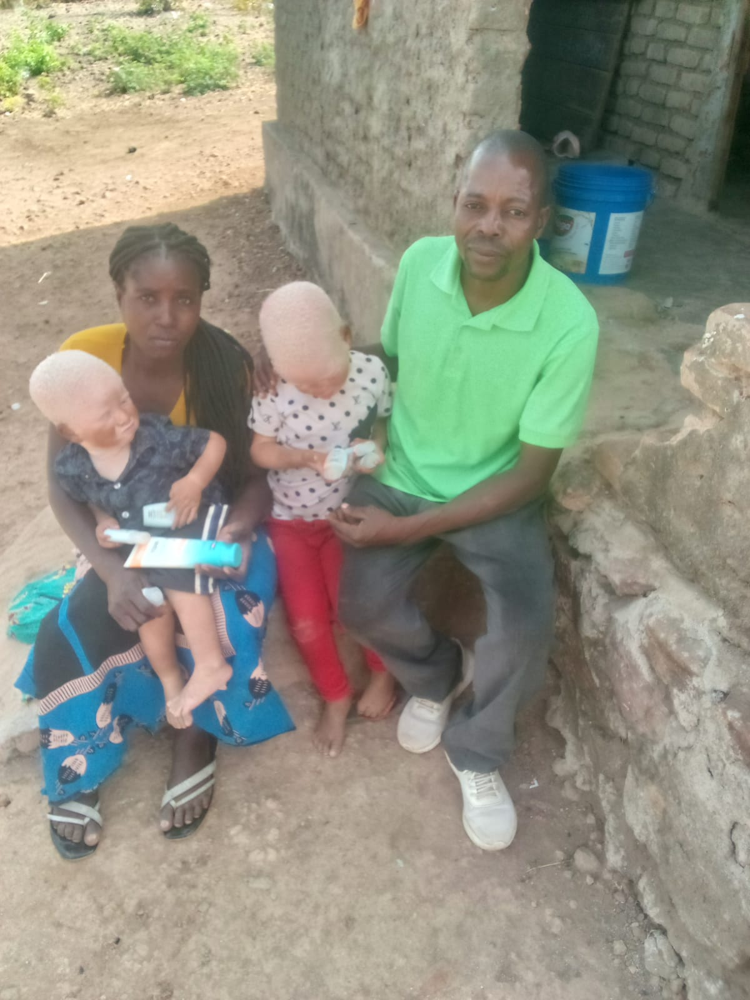
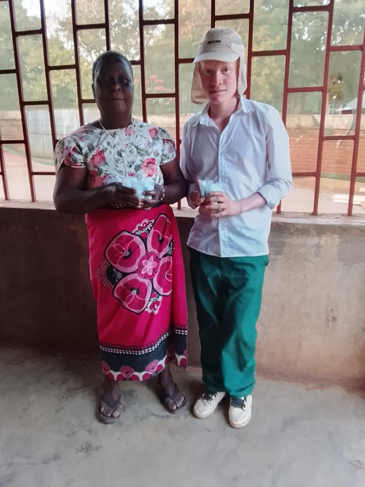

O Nosso TrabalhoOur Work
Quatro frentes, uma só missãoFour fronts, one mission
A AZEMAP actua em saúde, educação, apoio social e advocacia, sempre com respeito pela dignidade e autonomia de cada Pessoa com Albinismo. AZEMAP works across health, education, social support and advocacy, always respecting the dignity and autonomy of every person with albinism.

Saúde e Protecção SolarHealth & Sun Protection
Saúde e Protecção SolarHealth and Sun Protection
As Pessoas com Albinismo enfrentam elevado risco de queimaduras solares graves e cancro de pele, com acesso limitado a produtos de protecção e a cuidados dermatológicos especializados.People with albinism face a high risk of severe sunburn and skin cancer, with limited access to protective products and specialised dermatological care.
Resposta da AZEMAP:AZEMAP's response: a AZEMAP distribui protector solar, óculos e roupa de protecção, apoia consultas dermatológicas e encaminha casos para tratamento, mantendo o acompanhamento junto das famílias e das unidades sanitárias.AZEMAP distributes sunscreen, sunglasses and protective clothing, supports dermatological consultations and refers cases for treatment, while maintaining follow-up with families and health units.
ActividadesActivities
- Distribuição de protector solarSunscreen distribution
- Distribuição de óculos de solSunglasses distribution
- Distribuição de roupa de protecçãoProtective clothing distribution
- Apoio a crianças com queimaduras solares gravesSupport for children with severe sunburn
- Apoio a consultas dermatológicasSupport for dermatological consultations
- Encaminhamento para tratamento de cancro de peleReferral for skin cancer treatment
- Visitas a beneficiários doentes e acompanhamento familiarVisits to sick beneficiaries and family follow-up
- Trabalho com centros de saúde e serviços provinciaisWork with health centres and provincial services
Educação InclusivaInclusive Education
Educação InclusivaInclusive Education
Crianças com albinismo enfrentam frequentemente baixa visão, discriminação e exclusão na escola, o que compromete a sua permanência e sucesso educativo.Children with albinism often face low vision, discrimination and exclusion at school, which undermines their attendance and educational success.
Resposta da AZEMAP:AZEMAP's response: a AZEMAP apoia com material escolar e uniformes, forma professores, sensibiliza escolas e acompanha os alunos, promovendo a inclusão em sala de aula e a prevenção do bullying.AZEMAP supports children with school materials and uniforms, trains teachers, raises awareness in schools and follows up with students, promoting classroom inclusion and preventing bullying.
ActividadesActivities
- Distribuição de material escolarSchool materials distribution
- Distribuição de uniformesUniform distribution
- Apoio a crianças rejeitadas ou negligenciadas pela famíliaSupport for children rejected or neglected by their families
- Formação de professoresTeacher training
- Sensibilização nas escolasAwareness-raising in schools
- Inclusão em sala de aulaClassroom inclusion
- Incentivo a sentarem-se perto do quadro por baixa visãoEncouraging children with low vision to sit near the front
- Acompanhamento escolar e prevenção da discriminaçãoSchool follow-up and discrimination prevention


Apoio Social e ProtecçãoSocial Support and Protection
Apoio Social e ProtecçãoSocial Support and Protection
Pessoas com albinismo em situação de vulnerabilidade social, incluindo crianças abandonadas ou em risco, precisam de identificação, acompanhamento e ligação a serviços de apoio.People with albinism in situations of social vulnerability, including abandoned or at-risk children, need identification, follow-up and referral to support services.
Resposta da AZEMAP:AZEMAP's response: a AZEMAP identifica beneficiários, realiza visitas familiares, promove a inclusão social e orienta as famílias, mobilizando a comunidade para a protecção contra a violência e a negligência.AZEMAP identifies beneficiaries, carries out family visits, promotes social inclusion and guides families, mobilising the community to protect against violence and neglect.
ActividadesActivities
- Apoio a crianças abandonadas ou vulneráveisSupport for abandoned or vulnerable children
- Visitas familiaresFamily visits
- Identificação de beneficiáriosBeneficiary identification
- Inclusão socialSocial inclusion
- Orientação familiarFamily guidance
- Formação de jovens activistasDevelopment of young activists
- Encaminhamento para serviços adequadosReferral to appropriate services
- Mobilização comunitária e protecção contra a violênciaCommunity mobilisation and protection against violence
Advocacia e Direitos HumanosAdvocacy and Human Rights
Advocacia e Direitos HumanosAdvocacy and Human Rights
A discriminação e a violência contra Pessoas com Albinismo persistem por falta de informação e de políticas públicas consistentes.Discrimination and violence against people with albinism persist due to a lack of information and consistent public policy.
Resposta da AZEMAP:AZEMAP's response: a AZEMAP realiza campanhas de sensibilização, educação em direitos humanos e advocacia junto de instituições públicas, representando os interesses das Pessoas com Albinismo em fóruns nacionais e internacionais.AZEMAP runs awareness campaigns, human rights education and advocacy with public institutions, representing the interests of people with albinism in national and international forums.
ActividadesActivities
- Campanhas contra a discriminaçãoAnti-discrimination campaigns
- Campanhas contra a violênciaAnti-violence campaigns
- Educação em direitos humanosHuman rights education
- Sensibilização comunitáriaCommunity awareness
- Murais escolaresSchool murals
- Sessões de formaçãoTraining sessions
- Participação em fóruns nacionais e internacionaisParticipation in national and international forums
- Advocacia para políticas públicasPublic policy advocacy

Quer apoiar uma destas áreas?Want to support one of these areas?
Cada contribuição pode ser direccionada para uma necessidade concreta — protector solar, material escolar, transporte para consultas, ou apoio institucional. Every contribution can be directed to a concrete need — sunscreen, school materials, transport to appointments, or institutional support.
Ver formas de apoiarSee ways to help